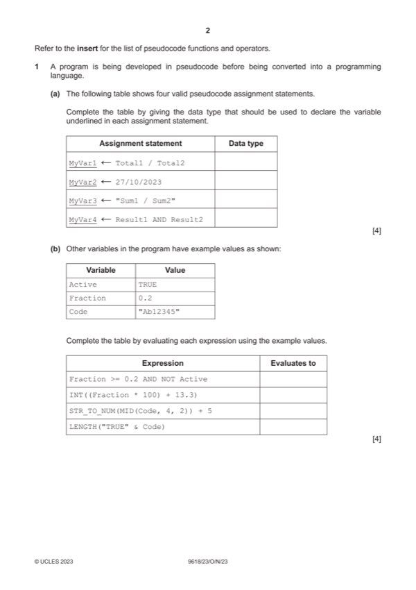

Question 1

Original paper page 2
Part 1(a) — solution
Answer: 4
4
Assignment statement Data type
MyVar1 Total1 / Total2 REAL
MyVar2 27/10/2023 DATE
MyVar3 "Sum1 / Sum2" STRING
MyVar4 Result1 AND Result2 BOOLEAN
Mark points
- Correct result: 4
Part 1(b) — solution
Answer: 4
- Fraction >= 0.2 AND NOT Active FALSE
Mark points
- Fraction >= 0.2 AND NOT Active FALSE
Part 1(c) — solution
The use of a program library (routines) 1
Mark points
- Include the ideas shown in the solution above.
Part 1(d) — solution
MP1 Type: Adaptive 2
MP2 Reason: The (user) requirement(s) changes // to accommodate
legislative changes
2023 Page 4 of 11
9618/23 Cambridge International AS & A Level – Mark Scheme October/November
PUBLISHED 2023
Mark points
- Include the ideas shown in the solution above.
Part 1 — solution
GetData() does not return a value until a message has been received
Mark points
- Include the ideas shown in the solution above.